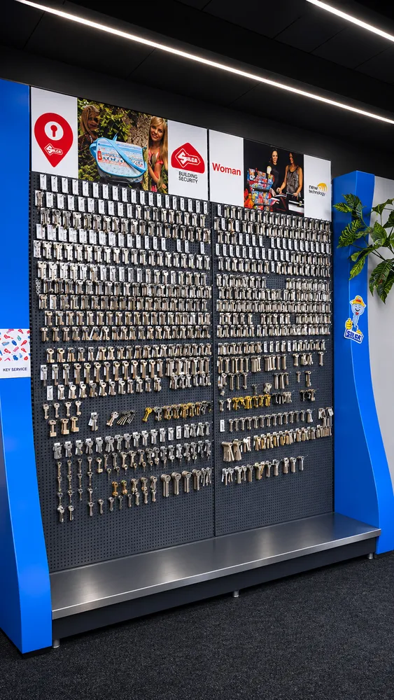

Sleutelservice
Sleutels bijmaken
- Huis- en deursleutelsop aanvraag
- Cilinder- en veiligheidssleutelsop aanvraag
- Dimple- en lasersleutelsop aanvraag
- Brievenbus- en kastsleutelsop aanvraag
- Kruissleutels en buissleutels (tubular)op aanvraag
- Baard- en kastsleutelsop aanvraag
- Fiets-, motor- en scootersleutelsop aanvraag
- Hangslot- en skiboxsleutelsop aanvraag
- Sleutels in kleur of met printop aanvraag
- Nieuwe cilinders en slotenop aanvraag
- Sleutel bestellen op nummer of certificaatop aanvraag